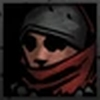

Tier list by reddit user u/vctshow
Tier S+
One of the best characters in the game, Plague Doctor is a staple in almost
every party. Due to her kit she excels in different roles. She can be great in a support
role but not in the conventional way. What she's known for is her powerful control abilites
and damage over-time. She can pretty much neutralize the enemy backline with her Blinding
Gas and Disorienting Blast. When it comes to her trinkets, usually players opt for ones that
increase stun chance. Overall, Plague Doctor is one of the best characters in Darkest Dungeon.
Tier S
If you are looking for a dedicated healer to join your party, Vestal might be what you need
as her kit includes both single target as well as whole party healing. It doesn't matter if
you are facing endgame content or you just started playing, she's equally good at what she
does. That said, healing is all she brings to a team. Because of that, she really has no
place in teams that want to mitigate damage in other ways, for example with heavy crowd
control skills. She's S+ tier for new players, though.
Helion is an offensive juggernaut. She can be a part of pretty much any party, as all she
really needs is to be in the first position. Put her there and let her deal tons of damage
with high crits and bleeds that can reach the enemy back line. She doesn't enjoy fights
that go on for a long time, but once she crits and goes on a rampage, everything dies fast.
Simply an overpowered adventurer that deserves the spot at the top of the Darkest Dungeon tier list.
Tier A
Even though many players dislike generalist adventurers for the most part, Houndmaster is a hero that
can work well in certain party formations, mostly from the 2nd, 3rd or 4th position. As a support unit,
his toolkit revolves around buffing his allies. His skill Target Whistle can mark targets and reduce
their PROT is always useful along with his camp abilities. In terms of damage dealing, Houndmaster
relies on bleed that causes damage over time, even though it's not really that strong. Because of his
bonus against Beast enemies, he's highly effective in the Warrens.
Arbalest and Musketeer are essentially the same heroes. Musketeer is a visual redesign of Arbalest that
was initially available only to 'Adventure tier' Kickstarter donators. The only difference between these
two are their unique shard trinkets, so it makes sense to rank them together. Even though they are
considered to be damage dealers, they are more of a support unit that adds utility to the team.
Battlefield Bandage ability can boost the healing a hero receives, making them a great pair with dedicated
healers such as Vestal or Occultist.
Same as the Arbalest with trinkets being different. Read the Arbalest description above.
Crusader is what you call a jack of all trades. Even though he's considered to be a tank, he brings a lot
to the table. His kit includes crowd control abilities, stress healing as well as HP healing. And, of
course, he has decent damage output with skills such as Zealous Accusation, Smite and Stunning Blow. His
Holy Lance ability allows him to jump right back to the frontline in case he was moved. His bonus damage
against unholy targets makes him a staple for any party that wants to go through the Ruins. Even though is
a generalist adventurer, Crusader is definitely top tier.
Even though he's a specialist who excels in single target damage, Bounty Hunter's kit makes him a highly
versatile adventurer that can fit into many formations. He has melee as well as ranged damage skills, he
can mark and stun targets and can also move around the formation easily thanks to his movement skills.
Because of that, he's a great fit to a party that aims to shuffle adventurers positions.
Leper is an adventurer with high base stats, great damage output, and a skill set that includes crowd control
abilities and immunities. Though his accuracy is bad you can offset this if you pair him with certain adventurers
such as Jester and get certain trinkets. That said, these trinkets won't come easily during the early stages.
Tier B
A frontline healer who can inflict bleed to pretty much any enemy regardless of position. Problem is, he also
likes to be dangerously low on HP to get the most out of his kit. You need to constantly pay attention to his HP.
Too much healing means no buffs, but leaving him on low-HP can also result in death. He has great synergy with
heroes like Plague Doctor and Antiquarian and he's certainly a unique adventurer. That said, Flagellant isn't
exactly what you would call a beginner-friendly hero. So if you just started playing the game, maybe you'll find
his play style somewhat confusing.
Occultist is one of the most versatile adventurers in the game. He can be played either as a damage dealer or a
dedicated healer, or even a support hero with his crowd control and debuff abilities. Because of that, Occultist
can easily fit into various teams. That said, most players opt to use Occultist in a healer role. Due to his RNG
healing mechanics (sometimes you might roll 0), he works great with adventurers that provide some type of healing.
Highwayman is all about doing damage to his enemies. If you are familiar with RPGs, then you probably know what a
rogue class is. A glass cannon that can dish out high amount of damage but at the same time has low health and
overall survivability. And that's what Highwayman is. He's an excellent damage dealer with great reach, but lower
than average health pool and little to no defenses. While he's very good at doing damage, that's really his only
contribution to a team.
Jester is a unique support adventurer in Darkest Dungeon. He's primary known as a stress healer, and he's great
at it, but that's not all he can do. Battle Ballad and Inspiring Tune, are two abilities that can provide buffs
to all party members. On the offensive, Jester relies on bleed to do damage, but he really needs certain
adventurers with him to be effective in that role as he wants to be locked in 3rd position.
Tier C
Abomination has a unique skill set that allows him to switch between human and beast form. Even though a
shapeshifting character sounds fun and interesting, the end result is somewhat underwhelming. The fact
that he can only transform once per battle, plus the disadvantage of a stress penalty to all party members
whenever he switches to his beast form, makes Abomination a bad fit for most team comps.

An adventurer with high Crit and Dodge base numbers but somewhat low-HP, Grave Robber lies somewhere between
a damage dealer and a support/utility unit. She can be pretty decent in what is known as moving parties, aka
team comps that like to rotate the heroes' position, and she has great synergy with certain heroes. That said,
she's not as good in other situations. Also, her cheap camp skills are notable and she has a good trinket set
for the most part.
Tier D

As a support unit, Antiquarian's kit revolves around buffing her party members. Even though many new players
don't like her due to her weak offense, she can be fantastic in certain teams and strategies. She's not a
traditional support like Vestal, as she can't be the primary healer of your team, but she can boost your party's
Dodge stat, raise their resistances or lower enemies ACC. Of course, her ability to raise the amount of gold you
earn is what really makes her stands out.